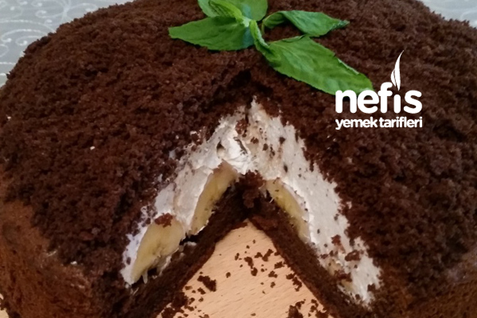

Köstebek Pasta Tarifi
Köstebek Pasta Tarifi
Kaç Kişilik: 8-10 kişi Hazırlama Süresi: 30 dk
Pişirme Süresi: 45 dk
Malzemeler
İçine;
Nasıl yapılır?
- Yumurtaların sarısı ve beyazı ayrı kaplara alınır.
- Şekerin yarısı beyaza yarısı sarıya eklenir.
- Yumurta akını köpürüp koyu bir kıvam olana kadar mikserle çırpılır.
- Yumurta sarısı şeker eriyene kadar çırpılır.
- İçine sıvı yağ ve süt ilave edilip çırpmaya devam edilir.
- Un, kabartma tozu, vanilya ve kakao tel süzgeçte elenerek karışıma ilave edilir.
- Mikserle iyice çırpılır.
- Köpürttüğümüz yumurta akı karışıma ilave edip spatula yardımıyla alttan üste söndüremeden karıştırılır.
- Kelepçeli kalıbın altına yağlı kağıt yerleştirilir ve karışım kalıba dökülür.
- 170 derece önceden ısıtılmış fansız alt üst kısmı yanan fırında 45 dakika pişirilir.
- Krema için şanti, toz krema ve süt bir kap içerisinde mikserle karıştırılarak hazırlanır ve en son damla çikolatalar eklenir. Kaşık yardımıyla karıştırılır.
- Kek soğuyunca kenarı havuz gibi kesilip kaşık yardımıyla yarıya kadar oyulur.
- Muzlar uzunlamasına kesilip içini doldurulur.
- Üzerine krema kubbe olacak gibi doldurulur.
- İçimden çıkan kek parçaları robottan geçirilip üzerine dökülür.
- Kek parçaları ve krema fazla gelebilir, fazlasını kup bardağına koyarak küçük porsiyon tatlı hazırlayabilirsiniz.
Afiyet olsun :)
